(in chronological sequence, the pictures gets bigger by selection)
My flying career begins in winter 1979 one of my RC-Car friends get the idea to keep the control feeling or better fine tune during winter time by flying gliders.
With
a Nimbus 3 of Carrera, 3 m wing span, I had my first minutes of
flight. Later I used a ASW 17, even from Carrera with 2,2 m wing
span, with this model I learned it really how to flight and how to
alight.
Due to the weight of the Nimbus the thermal performance
was lousy. I started immediately to build a new lighter and leaner
fuselage. The fuselage was a kernel of Styrofoam with balsa wood
cover where I forgot to give a glass coating. I payed for it at the
first harder alight.
I learned which less effort is required to
work with Styrofoam and balsa. Bit by bit I created different wings
to the fuselage. But at this point in time all the wings are without
any ailerons and I was happy to create without machines usable parts
for my hobby.
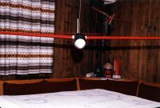 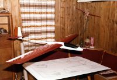
My first self constructed and build glider with ailerons for slop soaring, WB II, 2,2 m wing span, wing profile Eppler 178, 1997 down cellar in Berlin. Due to limited spare time this glider get heavy used after I have finished my time at college in 1980 at the "Grünen Heiner" close to Stuttgart.
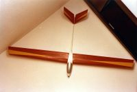
The "Eismann Jet" was never really flight by myself, since the transmitter did not has mixer to be used for V tail plane rudder. As reaction I build an electronic mixer by myself according a plan from the German magazine. The equipment does not really fit into the small fuselage and a mechanical build mixer wasn't reliable. Some years later with a new transmitter with software mixer I could flight this plane. A friend who was present ask me to sell this plane to him.

"Robbe Diamant", 3 m wing span, my first really kit with full balsa covered ribs. The break flaps are ahead of time.
One of my friends, who learned me most of my flight technique was a real good acro pilot. I was immediate infected by him. All my glider constructions has this type of background, I started the last complete self construction in summer 1980.
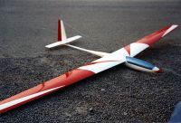
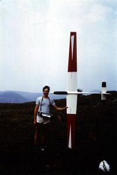

1980-81, WB III acro glider with 3 m wing span, as wing profile I used the Eppler 374. As I did with the glider WB II the fuselage was created in positive lost form and a glass tube to the tail plane rudder.

1982, Muliplex Flamingo, fully covered rip wings

 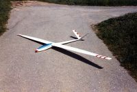
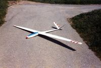
 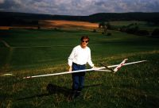
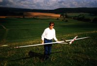
1983-84 Competitor, a Quabeck construction with 3,4 m wing span, I bought the fuselage from Gewalt Modellbau in Reutlingen and build the wing by myself (Styrofoam kernel covered with Koto veneer). The first time all servos are placed within the wings. The wing profile cross over from root with NACA 4415 to the tip with Worthmann FX-125, inconvenient, isn't it. I used this model more than 20 years, afterworlds I overtook it to a colleague, he had only smaller hand launch gliders up to this time.


1985-86, DG 200 Acroracer build with a fuselage from Gewalt Modellbau with 3 m wing span and a HQ 2,5 as profile. For the wings I realized attachable 30 cm wing tips. With tips attached the wing span increased to 3,6 m. together with the flapperons, ailerons and air brake there where 3 servos build within the wing. To dejam electronic noise from the receiver I used operational amplifier. Due to a wrong polarity on an capacitor and a following short cut the model got lost after a few flights.
For the moment I had enough glider models, animate by magazines I was interested by flying with electro motors. So I build some motor driver and battery charger. But at this point in time the motors had to less power, and the batteries to less capacity. For this reasons it makes no sense to me to have this type of engines used for gliders. So I build a sports model and used it for testing.
 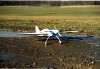
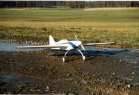
1988
Elliptic E, more or less copied from an American magazine. A sports
model with HQ 1.5 as profile for the wings with end to end
flapperons. Under the line this model had very good gliding
capability.
The construction plan was drawn in not counted lunch
breaks with a CADDAM system (further education).
Flying with electro power was not sufficient at this time and the continuous charging and discharging of the batteries caused me to stop this activity soon.


1988-89 ASK 21, 3,8 m wing span with a old Ritz III as profile and 4,3 Kg mass. The fuselage from Gewalt Modellbau, the wing build by my own. This was the first time the glider was damaged by duplicate usage of transmitter frequency.
Break to build a house - actual models are reachable by the menu.